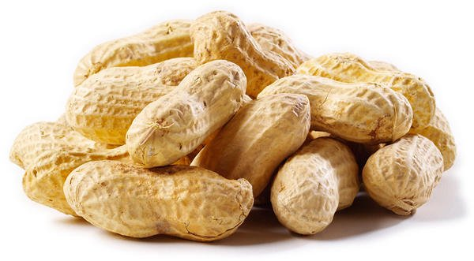
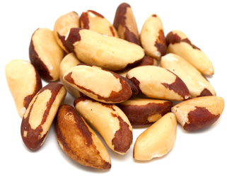
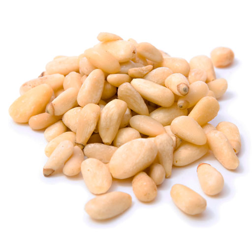
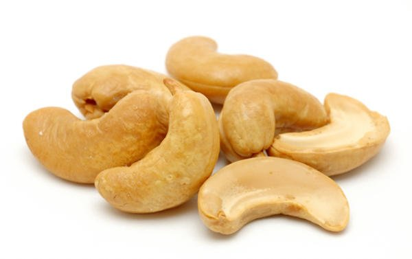
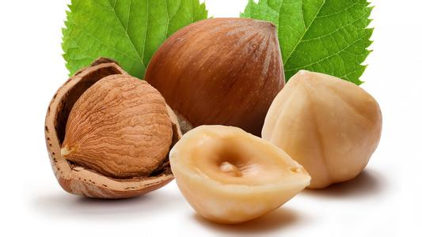
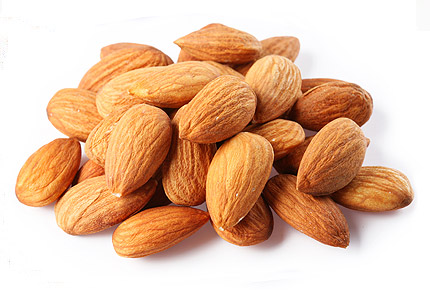
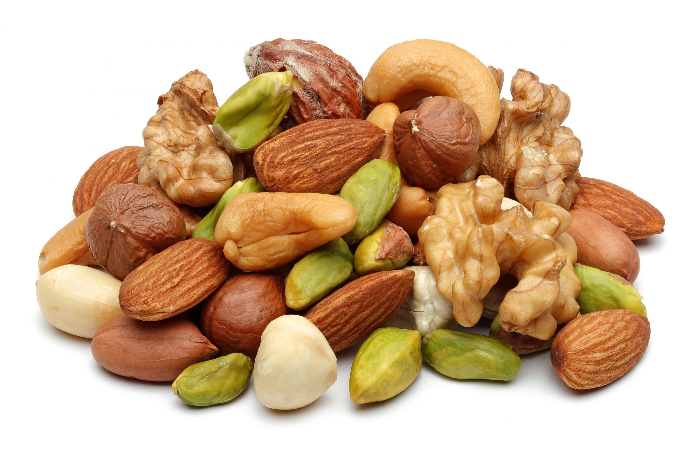

ВЫБЕРИ ОРЕХ
Оре́х — плод некоторых растений (преимущественно деревьев или кустарников), как правило, со съедобным ядром и твёрдой скорлупой. Более точное определение и круг растений, плоды которых называются орехами, зависит от того, с какой точки зрения рассматривается вопрос.
     КАТАЛОГ ОРЕХОВ
ПРО ОРЕХИ
Ядро грецких орехов напоминает мозг, что в Вавилоне породило запрет на их употребление (согласно Геродоту, жрецы считали, что съевший такие орехи человек может резко поумнеть), Платон в «Диалогах об Атлантиде» говорил, что орехи мыслят, прячась и переползая от сборщиков, а Свен Гедин, шведский путешественник, полагал, что сорванные недозрелые орехи пищат и плачут. Кухонный инструмент для раскалывания орехов называется «щипцы для орехов», «орехокол». Декоративный вариант этого инструмента называется «щелкунчик».
ПОЗВОНИ В НАШ ЛЕС
+696 969 6969